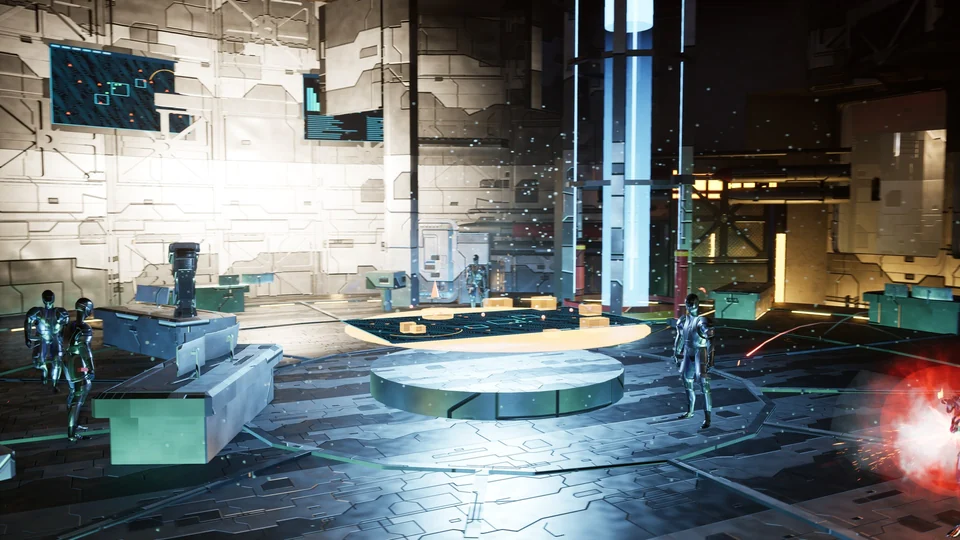

2026 · AI로 다시 만든 플레이어블 빌드
2026년 작업입니다. 2025년에 목업으로만 만들어 두었던 맵을, 그때의 목업과 기획서를 바탕으로 Claude를 활용해 재작업했습니다. 아래 영상이 그 결과물입니다. 원작 테란 캠페인 4번 미션 「제이콥 연구소」를 3인칭 잠입 · 슈팅 레벨로 옮겼고, 직접 내려받아 플레이할 수 있습니다.

플레이어블 빌드 내려받기 — THE JACOBS INSTALLATIONWindows 64비트 · 1.4 GB · 압축을 풀고 portfolio.exe 실행 · RTX 3060 급 이상 권장↓ 내려받기 →재작업
2025년 목업과 기획서를 그대로 출발점 삼아, AI를 활용해 퀄리티를 끌어올렸습니다.
데코
모델링 툴과 무료 리소스를 활용해 공간의 형태는 유지하되 스타크래프트 원작의 모습에 더 가깝게 꾸몄습니다.
플레이어블
PC와 NPC를 직접 조작하고 상대할 수 있게 구현했습니다. 보는 목업이 아니라 해 보는 빌드입니다.
기간
3일
2025 · 원작 목업과 기획서
2025년 작업입니다. 평면 RTS 미션을 3인칭 시점의 공간으로 옮기면 무엇이 달라지는지를 목업으로 검증하고, 기획서와 브리핑 영상으로 정리했습니다. 위의 2026 빌드는 이 결과물을 출발점으로 삼았습니다.
2025 기획서 — 슬라이드를 눌러 크게 보거나, 아래에서 PDF로 받아 볼 수 있습니다.